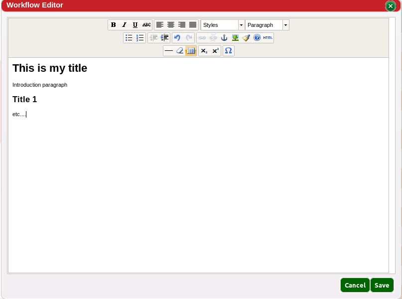
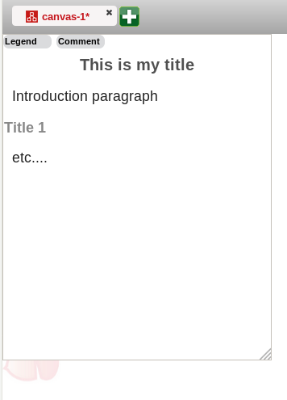
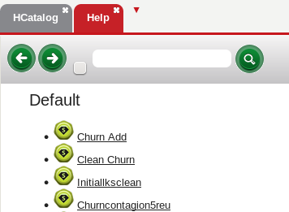

The comment editor helps in introducing the workflow, documentation notes and can also be used to explain the workflow requirements. The Comment Editor is accessible through: Project>Comment Editor.
It can also be viewed by clicking the Comment button on the top left of the workflow.
In the case of a Super Action the comment is used as a documentation available through the help menu under the action name.
